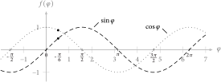
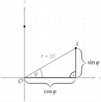

2. Komplexe Zahlen und die Eulersche Gleichung#
In Kapitel 1 haben wir gesehen, dass die Kurvenverläufe von Sinus und Cosinus im kartesischen Koordinatensystem aus dem kreisförmigen Umlauf der Radiuslinie im Einheitskreis entstehen. Wir tragen die möglichen Werte des Winkels \(\varphi\) auf der Rechtsachse eines kartesischen Koordinatensystems auf, und auf der Hochachse notieren wir zu jedem Wert von \(\varphi\) die zugehörigen Werte von \(\sin\varphi\) und \(\cos\varphi\).
In Arbeit
Bildbezug zu Kapitel 1 (Einheitskreis) herstellen.
Während \(\varphi\) die Werte von \(0\) bis \(2\pi\) annimmt, läuft die Radiuslinie im Einheitskreis einmal um den gesamten Kreis um. Lassen wir die Radiuslinie über \(\varphi=2\pi\) hinaus weiterlaufen, so nehmen \(\sin\varphi\) und \(\cos\varphi\) in der Folge wieder die gleichen Werte an. Die beiden Funktionen haben die Periode \(2\pi\):
Dieses „Laufenlassen“ von \(\varphi\) kann in der Natur die Zeit für uns übernehmen. Die Zeit ist eine Größe, deren Wert ständig und gleichmäßig in eine Richtung zunimmt. In der Zeit finden alle Vorgänge statt, das heißt, die Zeit ist ein Parameter aller Vorgänge. (Sie ist ein Argument aller Funktionen, die den zeitlichen Verlauf physikalischer Größen beschreiben.) Wir kürzen die Zeit mit dem Buchstaben \(t\) ab. Wir betrachten also nun einen zeitabhängigen Winkel, das heißt \(\varphi\) soll sich proportional zur Zeit ändern. Wir können nicht direkt \(\varphi=t\) setzen, da die Zeit eine physikalische Dimension ist und mit einer Einheit angegeben wird. Üblicherweise messen wir die Zeit in der Einheit Sekunde (\(\mathrm{s}\)). Bei \(t=2\,\mathrm{s}\) zum Beispiel hätten wir dann einen Winkel \(\varphi=2\,\mathrm{s}\). Es ergibt aber wenig Sinn, Winkel in Sekunden zu messen! Aber selbst, wenn wir diese Kuriosität zuließen: Die Funktionen Sinus und Cosinus akzeptieren Argumente mit physikalischer Dimension gar nicht. Das Objekt \(\sin(2\,\mathrm{s})\) („Sinus von zwei Sekunden“) ist nicht definiert, wir können es nicht berechnen. Was wir berechnen können, ist der Sinus von \(2\): \(\sin(2)\). Wir brauchen also für die Beziehung zwischen \(\varphi\) und \(t\) eine Proportionalitätskonstante mit der physikalischen Dimension „1 durch Zeit“. Wenn wir diese Konstante mit einer Zeit \(t\) multiplizieren, dann kürzen sich die physikalischen Dimensionen heraus (Zeit durch Zeit), und wir können den Sinus oder den Cosinus vom Ergebnis berechnen.
Diese Proportionalitätskonstante nennt man die Kreisfrequenz. Sie wird mit dem Buchstaben \(\omega\) abgekürzt, und so schreibt man also:
Wir müssen den Winkel \(\varphi\) nun nicht mehr „per Hand“ auf bestimmte Werte einstellen, und die zugehörige Radiuslinie müssen wir nicht mehr „per Hand“ um den Einheitskreis umlaufen lassen. Das macht jetzt automatisch die Zeit für uns. Der Wert der Kreisfrequenz \(\omega\) gibt dabei an, wie schnell oder wie langsam sich unser Winkel mit der Zeit ändert. Bei größerem \(\omega\) verändert sich unser Winkel in einer Zeitspanne \(\Delta t\) mehr als bei einem kleineren \(\omega\). Größere Werte von \(\omega\) bedeuten also einen schnelleren Umlauf der Radiuslinie im Kreis. Die Funktionsgraphen von Sinus und Cosinus werden „schneller durchlaufen“.


Abb. 2.1: Die Funktionsgraphen von Sinus (gestrichelt) und Cosinus (gepunktet) (Quelle: eigene Darstellung; Lizenz: CC BY-SA 4.0)#
Aus unserer Sinus- und Cosinusfunktion sind nun Funktionen der Zeit geworden:
Neues Argument hin oder her, auch diese Funktionen haben die Periode \(2\pi\), denn sie sind Sinus- und Cosinusfunktionen. Also muss gelten:
Das heißt, wenn \(\omega t\) um \(2\pi\) zugenommen hat, dann ist die Radiuslinie einmal um den Einheitskreis umgelaufen und die Funktionsverläufe von Sinus und Cosinus beginnen, sich zu wiederholen. Aber wieviel Zeit vergeht, während \(\omega t\) um \(2\pi\) zunimmt? Diese Zeit wollen wir \(T\) nennen. Unsere Funktionen \(f(t)\) und \(g(t)\) haben also die Periode \(T\). Das bedeutet:
und
Wir setzen nun die Gleichung (2.6) in die linke Seite von Gl. (2.4) ein, und Gl. (2.7) in die linke Seite von Gl. (2.5). Wir erhalten:
Damit das gilt, muss gelten:
Das Inverse von \(T\) wird die Frequenz genannt und mit \(f\) abgekürzt: \(f=1/T\). Während \(T\) die Zeitdauer angibt, die es braucht, bis der Winkel \(\varphi=\omega t\) einmal den ganzen Einheitskreis abgedeckt hat, gibt \(f\) die Anzahl der Kreisumläufe pro Zeiteinheit an. Es ist üblicher, \(\omega\) mithilfe der Frequenz auszudrücken als mithilfe der Umlaufdauer \(T\):
Wir wollen uns Sinus- und Cosinus-Schwingungen im Folgenden anhand von zwei technischen Beispielen veranschaulichen. Einmal behandeln wir eine gedämpfte mechanische Schwingung, einmal einen elektrischen Schwingkreis. Anhand dieser Beispiele werden wir einsehen, dass reale Schwingungsbewegungen mit Phasenverschiebungen am besten mithilfe von Drehungen der Radiuslinie beschrieben werden können. Ausgehend von diesen Beispielen werden wir anschließend feststellen, dass uns dies noch einfacher gelingt, wenn wir eine neue Art von Zahlen einführen.
Sie müssen nicht beide Beispiele lesen, sondern können auswählen, welches Beispiel Sie lesen möchten. Sie müssen auch überhaupt kein Beispiel lesen, sondern können, wenn Sie sich nur für die Mathematik interessieren, direkt zum Abschnitt Schwingungen als Drehungen in der Zahlenebene gehen und dort unsere mathematische Schlussfolgerung lesen.
Beispiel 1: Mechanische Schwingung#
In Arbeit
Gedämpfter Federschwinger, Amplitude und Phase einführen, Begriff Phasenverschiebung einführen und im Kreisdiagramm zeigen.
Beispiel 2: Elektrische Schwingung#
In Arbeit
Phasenverschiebung im Schwingkreis
Schwingungen als Drehungen in der Zahlenebene#


Abb. 2.2: Ein Punkt in der Ebene (Quelle: eigene Darstellung; Lizenz: CC BY-SA 4.0)#
Abb. 2.2 zeigt einen Punkt \(z\) des Einheitskreises in der Papierebene, in die wir wie in Abb. 1.1 ein kartesisches Koordinatensystem gezeichnet haben. Der Punkt ist eindeutig gegeben durch die Angabe des Winkels \(\varphi\) und den Abstand \(r\) des Punkts vom Ursprung. (Wir schreiben nun wieder einfach \(\varphi\) statt \(\omega t\), behalten aber im Hinterkopf, dass \(\varphi\) …)
In Arbeit
Der Satz in der Klammer oben ist noch nicht zu Ende geschrieben.
Seine Koordinaten in Bezug auf die Rechts- und die Hochachse (\(1\)-Achse und \(2\)-Achse) sind dann \(\cos\varphi\) und \(\sin\varphi\), in dieser Reihenfolge. (Denn wir müssen vom Ursprung \(\cos\varphi\) in \(1\)-Richtung (nach rechts) gehen und dann \(\sin\varphi\) in \(2\)-Richtung (nach oben).) Wir schreiben das nun etwas ungewöhnlich als: